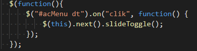
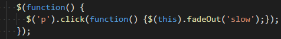
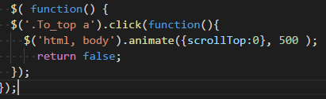

便利なJQuery集
アコーディオンの実装
アコーディオンはクリックすると下に出てくるjQueryです。

デモ
引用元：https://liginc.co.jp/web/js/jquery/34048
フェードアウトの実装
フェードアウトは、文字をクリックすると文字が消えるjQueryです。

デモ
引用元：https://liginc.co.jp/web/js/jquery/34048
トップに戻るボタンの実装
右下のTOPに戻るボタンを押すとページ上部に戻ります。

デモ
引用元：http://millkeyweb.com/jquerycode7/